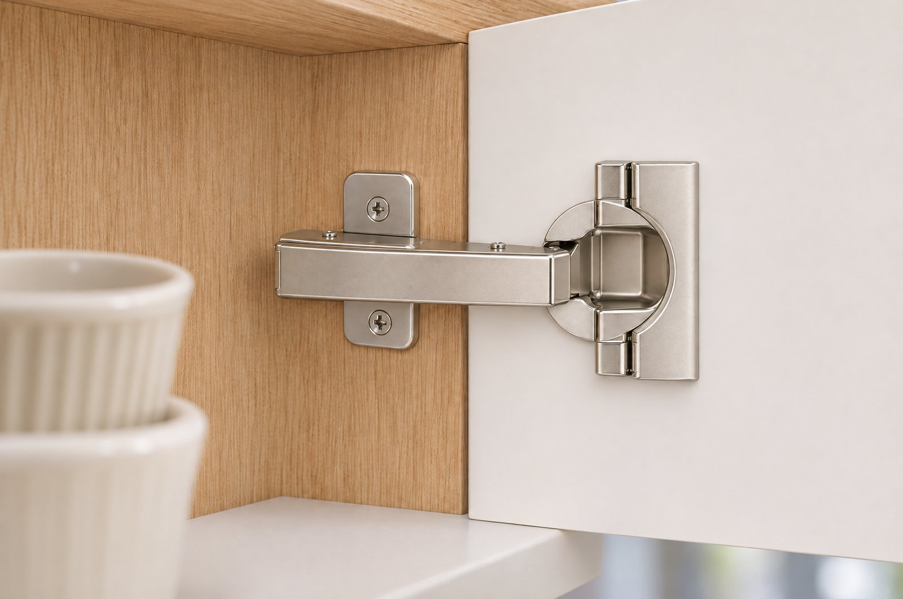
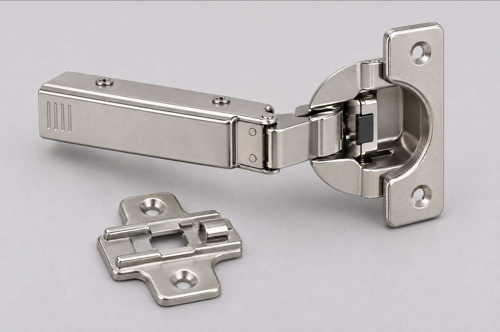
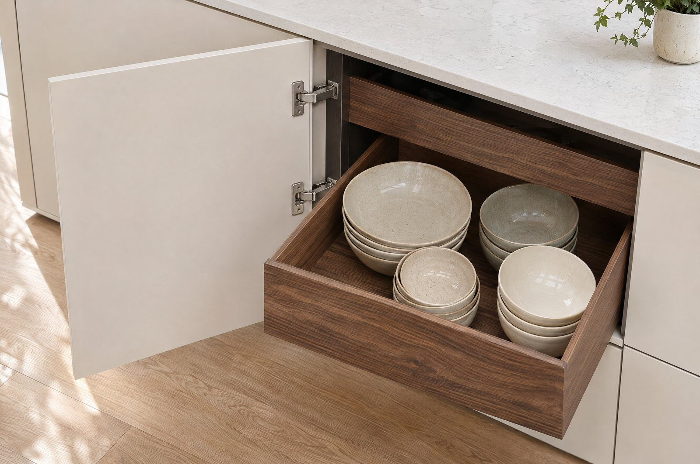
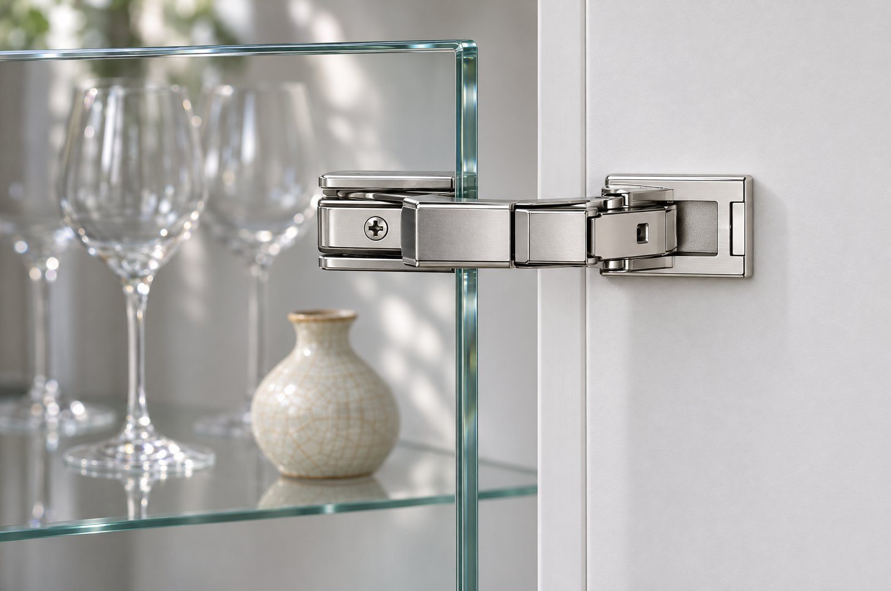
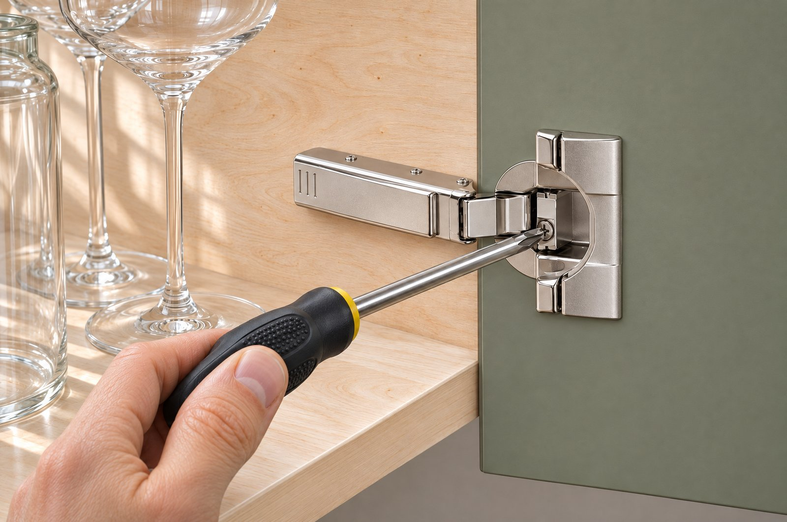
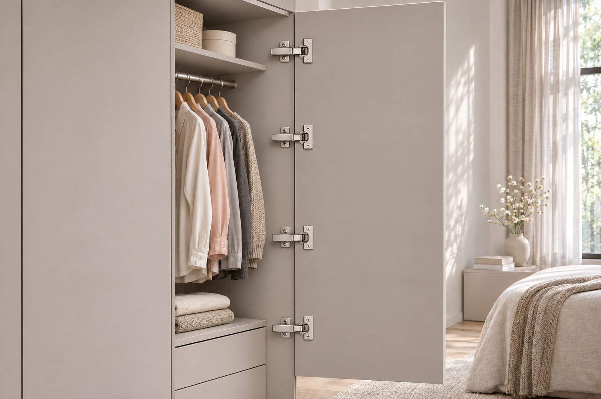

하드웨어
철물 시리즈 02
경첩, 덮음 방식 · 열림 각도 · 댐핑 읽기
싱크대 · 붙박이장 문에 쓰는 숨은 경첩이 어떻게 생겼고 무엇으로 나뉘는지, 문마다 몇 개를 다는지, 견적서에서 무엇을 확인할지 정리합니다.
1경첩이란
싱크대와 붙박이장 문에 쓰는 경첩은 대부분 컵 경첩입니다. 문을 닫으면 밖에서 보이지 않아 숨은 경첩이라고도 부릅니다. 문 안쪽에 둥글게 판 홈에 컵이 들어가고, 컵에서 나온 팔이 몸통 옆판에 붙은 받침판에 끼워집니다. 요즘 제품은 닫힘 속도를 줄여 주는 댐퍼가 경첩 안에 들어 있고, 공구 없이 끼우고 빼며, 문 위치를 세 방향으로 맞출 수 있습니다.

1.1세 부분

- 컵
- 문 안쪽에 판 둥근 홈에 들어가는 부분입니다. 제조사 자료의 한 예로 컵 지름은 35mm, 깊이는 12.8mm입니다. 「보스」 또는 「보스 컵」이라고도 부릅니다.
- 팔(힌지 암)
- 컵과 받침판을 잇습니다. 팔 모양은 곧은 팔 · 한 번 꺾인 팔 · 두 번 꺾인 팔 셋으로 나뉩니다. 꺾임에 따라 문이 몸통을 덮는 폭이 달라집니다.
- 받침판(마운팅 플레이트)
- 몸통 옆판에 나사로 붙이고 팔을 끼우는 판입니다. 일자형과 십자형이 있고, 문 높이는 받침판에서 맞춥니다.
컵을 문에 고정하는 방법도 공구 없이 꽂는 방식 · 나사로 고정하는 방식 · 때려 박는 방식 등 여럿입니다.
2문이 몸통을 덮는 방식
문이 몸통 옆판을 얼마나 덮느냐에 따라 팔의 꺾임이 다른 경첩을 씁니다. 같은 계열의 경첩이라도 덮음 방식마다 품번이 따로 있습니다.
| 덮음 방식 | 문 위치 | 팔 모양 |
|---|---|---|
| 전체 덮음 | 문이 옆판 앞면을 다 덮습니다. | 곧은 팔 |
| 반 덮음 | 가운데 칸막이 하나를 양쪽 문 두 장이 반씩 나눠 덮습니다. | 한 번 꺾인 팔 |
| 인셋 | 문이 몸통 안으로 들어가 앞면이 몸통과 같은 면이 됩니다. | 두 번 꺾인 팔 |
실제로 문이 옆판을 덮는 폭은 팔 꺾임, 받침판 높이, 컵 거리(문 끝에서 컵 구멍 가장자리까지) 세 값이 함께 정합니다. 제조사 카탈로그의 한 예로 꺾임 3, 받침판 높이 2, 컵 거리 4mm일 때 문이 옆판을 14mm 덮습니다. 경첩만 바꾸고 받침판을 그대로 두면 덮는 폭이 달라질 수 있는 까닭입니다.
3열림 각도와 문에 맞춘 경첩
경첩은 문이 얼마나 열리는지와 어떤 문에 다는지에 따라서도 나뉩니다. 아래는 제조사 카탈로그의 경첩 개요표를 바탕으로 정리한 것입니다. 회사마다 각도 구성은 조금씩 다릅니다.
| 열림 각도 | 쓰임 |
|---|---|
| 110° · 107° · 100° | 표준 |
| 155° · 125° | 문이 옆판 밖으로 튀어나오지 않음(0-protrusion) |
| 170° | 넓게 여는 곳 |
| 95° | 프로파일 문 · 두꺼운 문 · 좁은 알루미늄 프레임 문 |
| 95° · 83° | 블라인드 코너 |
| 110° · 94° | 얇은 문 · 유리문, 프레임 문용 작은 경첩 |
| 60° | 코너장 접이문 |
| 95° · 110° (+20° · +30° · +45°) | 사선으로 짠 몸통에 맞춘 각도 경첩 |
3.1넓은 각 경첩과 안쪽 서랍

장 안에 서랍을 넣는 경우, 표준 경첩으로는 열린 문이 칸 안쪽으로 조금 들어와 서랍이 걸릴 수 있습니다. 155° 안팎으로 넓게 열리는 경첩은 문이 옆판 밖으로 나오지 않아 안쪽 서랍이 문에 걸리지 않습니다. 넓은 각 경첩은 여러 회사가 155° · 165° · 170° 등으로 냅니다.
3.2문 두께 · 재질에 맞춘 경첩

보통 두께의 문은 표준 경첩을 쓰지만, 얇은 문 · 두꺼운 문 · 유리문은 전용 경첩이 따로 있습니다.
| 문 | 쓰는 경첩 | 제조사 자료의 예 |
|---|---|---|
| 표준 두께 | 표준 경첩 | 15~24mm 문 |
| 얇은 문 | 얇은 문 전용 경첩 | 8mm 문용도 있음 |
| 두꺼운 · 프로파일 문 | 두꺼운 문 · 프로파일 문 경첩 | 20~40mm 문용까지 |
| 유리 · 거울 | 유리에 붙이는 판으로 다는 유리문 경첩 | 컵 홈을 파지 않음 |
4댐핑(소프트클로즈)
댐핑 경첩은 문이 닫히기 직전 구간에서 속도를 줄여, 세게 밀어도 문이 부딪히지 않고 천천히 닫히게 합니다.
4.1내장형과 덧붙이는 형
요즘 경첩은 댐퍼가 경첩 안에 들어 있는 내장형이 많습니다. 댐퍼 자리는 제품마다 달라 컵 안에 든 것도, 팔 안에 든 것도 있습니다. 댐퍼가 없는 경첩에 따로 붙이는 덧붙이는 형도 있습니다.
두 방식을 한 문에 섞어 다는 것은 조심해야 합니다. 제조사 자료는 댐퍼 내장 경첩과 일반 스프링 경첩을 섞어 쓸 때 300mm 이하의 작고 가벼운 문에서만 시험해 보라고 하고, 넓은 문에는 권하지 않습니다.
4.2세기와 작동 구간
- 세기 조절
- 레버로 약 · 중 · 강 3단을 공구 없이 바꾸는 제품, 작은 스위치로 감속을 조절하는 제품, 작고 가벼운 문을 위해 댐핑을 끌 수 있는 제품이 있습니다.
- 잡아 주기 시작하는 각도
- 제품에 따라 문이 30~35° 남았을 때부터 잡아 줍니다.
5달기와 맞추기
5.1클립으로 달고 떼기
받침판은 미리 옆판에 붙여 두고, 경첩을 단 문을 밀어 팔을 받침판에 「딸깍」 끼웁니다. 뗄 때도 공구가 필요 없습니다.
5.2세 방향 조절

문을 단 뒤 문 사이 틈과 높이가 맞지 않으면 경첩 나사로 맞춥니다. 세 조절은 서로 따로 움직입니다.
| 방향 | 조절 범위 | 어디서 |
|---|---|---|
| 옆(좌우) | ±2mm | 팔의 나사 |
| 깊이(앞뒤) | +3 / −2mm | 팔의 나사 |
| 높이(위아래) | ±2mm | 받침판 |
5.3문 하나에 경첩 몇 개

경첩 수는 문 높이와 무게(손잡이 무게까지)로 정하고, 문 재질과 고정 방식도 봅니다. 제조사 기준표는 폭 600mm까지의 문을 기준으로 합니다.
| 문 무게 · 크기 | 경첩 수 |
|---|---|
| 4~6kg | 2개 |
| 6~12kg | 3개 |
| 2,000 × 600mm, 13kg | 4개 |
높고 좁은 문은 6kg이어도 3개가 더 안정적일 수 있고, 폭이 650mm까지 넓으면 하나를 더 답니다. 애매하면 시험 설치로 정합니다.
6국내에서 볼 수 있는 브랜드
제품 계열은 각 회사 공식 누리집 · 카탈로그 표기(2026년 11월 확인)입니다. 국내 회사 경첩도 널리 쓰이지만, 이 글에서는 공식 자료로 확인한 네 회사만 정리했습니다.
| 브랜드 | 나라 | 대표 계열 | 특징 |
|---|---|---|---|
 Blum(블룸) Blum(블룸) | 오스트리아 | CLIP top BLUMOTION, CRISTALLO | 댐퍼 내장, 110° · 155° · 170° 등 |
 Hettich(헤티히) Hettich(헤티히) | 독일 | Sensys, Intermat, Avosys | 팔 안에 댐퍼, 165° 넓은 각 · 얇은 문 · 두꺼운 문 경첩 |
 Grass(그라스) Grass(그라스) | 오스트리아 | Tiomos, Nexis | 댐핑 3단 조절, 자체 시험 10만 회 |
| Salice(살리체) | 이탈리아 | Silentia+ | 컵 속 실리콘 오일 댐퍼 2개, 스위치로 조절, 눌러 끼우는 받침판 |
해외 브랜드는 국내 수입 · 유통처를 거쳐 들어옵니다. 경첩은 문마다 여러 개가 들어가므로, 나중에 같은 제품을 다시 구할 수 있는지와 A/S 창구를 미리 물어봅니다.
7견적서에서 경첩 확인하기
견적서에 「경첩 포함」만 적혀 있으면 어떤 경첩이 몇 개 들어가는지 알 수 없습니다. 아래 일곱 가지가 적혀 있는지 한 번에 확인합니다.
| 항목 | 적혀 있어야 할 내용 | 왜 확인하나 | 자주 놓치는 것 |
|---|---|---|---|
| 브랜드 · 계열 | 브랜드와 계열 이름, 품번 | 같은 계열도 덮음 방식마다 품번이 다릅니다. | 「경첩 포함」처럼 이름 없이 적힌 견적 |
| 열림 각도 | 표준(100~110°) · 넓은 각(155° 등) | 안쪽 서랍이 있는 장은 넓은 각이 아니면 문에 걸릴 수 있습니다. | 안쪽 서랍장에 표준 경첩 |
| 댐핑 | 댐퍼 내장 · 덧붙이는 형 · 없음 | 제조사 자료는 두 종류를 섞는 것을 작고 가벼운 문에서만 시험해 보라고 합니다. | 댐핑 여부가 빠진 견적 |
| 받침판 | 경첩과 짝이 맞는 받침판 | 받침판 높이가 문이 덮는 폭을 바꿉니다. | 경첩만 적고 받침판이 없음 |
| 문당 개수 | 문마다 경첩 수 | 키큰장 · 붙박이장 큰 문은 높이와 무게로 개수를 정합니다. | 큰 문에도 두 개만 적힘 |
| 문 재질 · 두께 | 얇은 문 · 두꺼운 문 · 유리문 전용 경첩 | 얇은 문 · 두꺼운 문 · 유리문은 전용 경첩이 따로 있습니다. | 유리문에 일반 경첩 |
| 부품 · A/S | 국내 수입 · 유통처와 A/S 창구 | 나중에 같은 경첩을 다시 구해야 합니다. | 고장 났을 때 연락할 곳을 모름 |
고객이 확인할 것
- 경첩 브랜드 · 계열이 견적서에 적혀 있는지
- 안쪽 서랍이 있는 장에 넓은 각 경첩이 들어가는지
- 댐핑 경첩인지, 한 문에 종류를 섞지 않았는지
- 키큰장 · 붙박이장 큰 문에 경첩이 몇 개 들어가는지
- 유리문 · 얇은 문은 전용 경첩인지
- 부품 · A/S를 받을 국내 창구